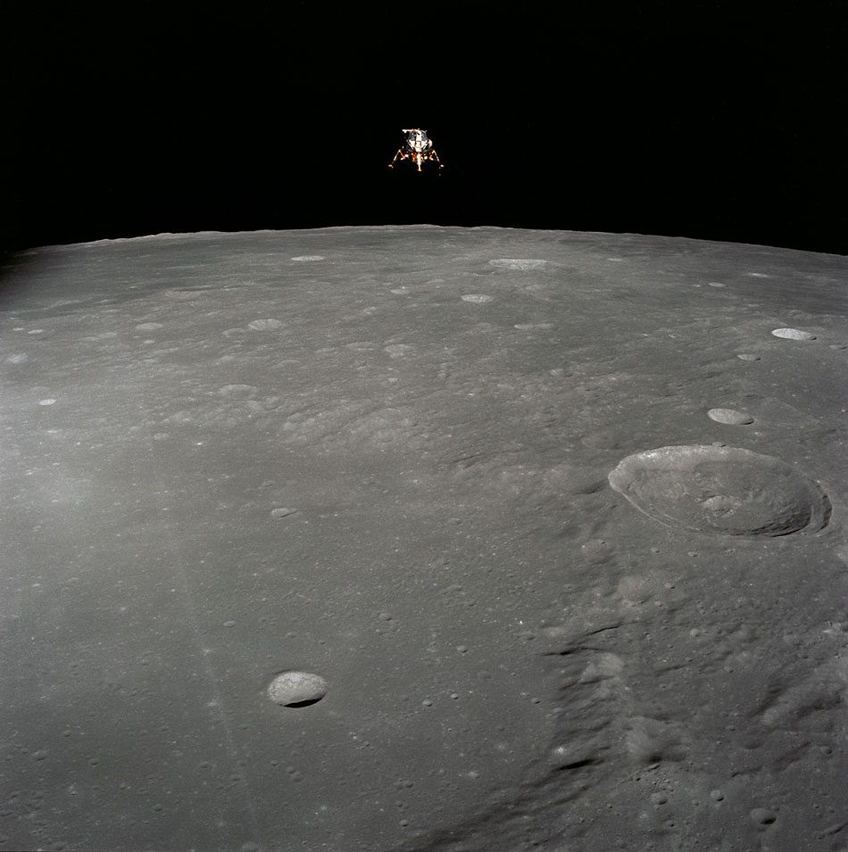
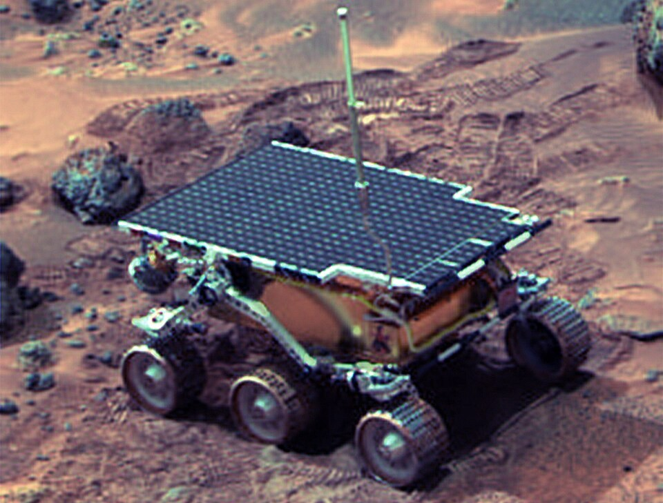
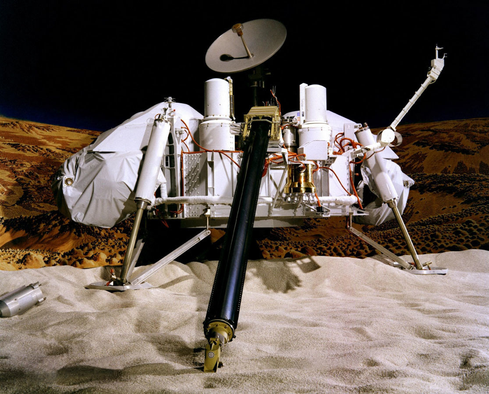
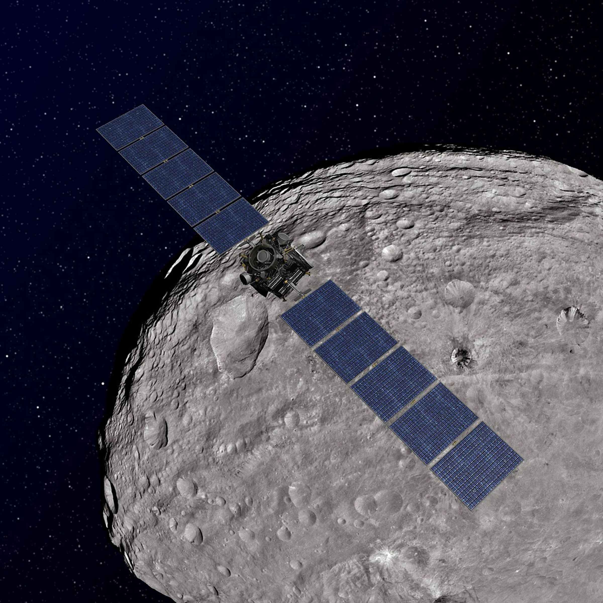

The fleet
Choose a machine to open its full story on its own page.

Apollo Lunar Modules
The spidery landers whose lower halves became launch pads.
Read the full story
Lunar Roving Vehicles
Three battery-powered moon buggies, parked for good.
Read the full story
ALSEP Science Stations
Automated labs that kept listening to the Moon for years.
Read the full story
Surveyor Landers
Robotic scouts that proved the Moon was safe to land on.
Read the full story
Sojourner Rover
A microwave-sized rover that proved wheels could work on Mars.
Read the full story
Spirit and Opportunity
Twin rovers built for 90 days. One lasted six years, the other fourteen.
Read the full story
Viking 1 and 2 Landers
The first American robots to work on Mars, searching for life.
Read the full story
Phoenix and InSight
One dug for ice, the other listened for marsquakes. Both ran out of sunlight.
Read the full story
Dawn
The first spacecraft to orbit two worlds, now a silent moon of Ceres.
Read the full story
NEAR Shoemaker
Built to orbit an asteroid. It landed on one too.
Read the full story
Pioneer 10 and 11
The first travellers to the outer planets, now drifting between stars.
Read the full story
Ingenuity Helicopter
The first aircraft to fly on another planet.
Read the full story
Kepler Space Telescope
A planet hunter that found more worlds than anyone expected.
Read the full storyNo machines match. Clear the search to see all of them.